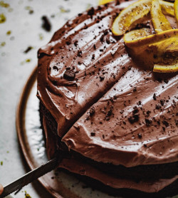

Chocolate Orange Cake

Description
A moist chocolate cake that incorporates orange juice and extract into the batter and frosting for a nice citrusy flavor!
I have made adjustments to the recipe to make it vegan!
Ingredients
For the cake:
- 1¾ cups (210g) all purpose flour
-
2 cups (396g) granulated sugar
-
¾ cup (63g) of unsweetened cocoa powder
-
1½ tsp (6g) baking powder
-
1½ tsp (9g) baking soda
-
1 tsp (5.69g) salt
- 2 chia eggs
- 1 cup oat milk
-
½ cup (99g) coconut oil or other vegetable oil
-
1 tsp (4.7g) of pure vanilla extract
-
1 tsp (4.7g) pure orange extract
-
1 cup (236.5g) hot freshly squeezed or prepared 100 percent pure orange juice
For the Chocolate orange cream cheese frosting:
-
2½ cups Powdered sugar (approx 284 grams)
- 8 tbsp vegan butter
-
½ cup Unsweetened cocoa powder (approx 50 grams)
-
4 tbsp (59g) of very hot orange juice
-
¼ tsp (1.17g) vanilla extract
-
¼ tsp (1.17) of orange extract (optional but gives the frosting a little more pronounced orange flavour)
-
4 oz (113g) of vegan cream cheese at room temperature‐ can add a little more to suit taste and texture of frosting (approx half or ¾ of a regular pack)